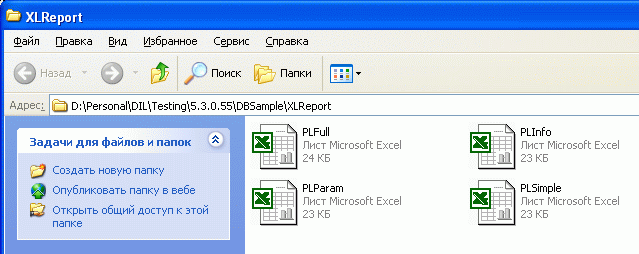

Для выбора и редактирования макета, с помощью которого будет сформирован прайс-лист в Excel, из главного окна Melbis Shop выбором пункта меню "Утилиты - Прайс лист в Excel - Открыть папку с макетами прайс-листов" следует вызвать папку с этими макетами:

Указанная папка содержит четыре макета, соответствующих выбранной полноте данных, включаемых в прайс:
Перед корректировкой макета рекомендуется сделать резервную копию исходного варианта, чтобы к нему можно было вернуться в случае неудачи.